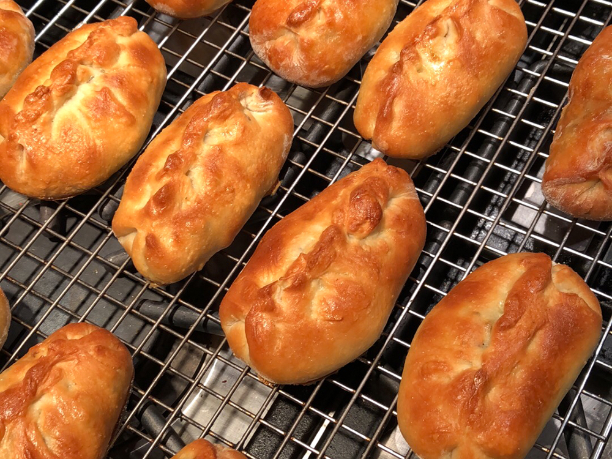

Piroshki

Description
Russian Piroshki
Ingredients
- 1½ pounds ground beef
- 1 onion, finely chopped
- 1 teaspoon salt
- ground black pepper to taste
- dried dill weed to taste
- 1 (¼ oz) package active dry yeast
- ¼ cup warm water
- 1 cup milk
- 3 eggs
- ½ cup vegetable oil
- 2 tablespoons granulated sugar
- 1 teaspoon salt
- 4 cups all-purpose flour
- 3 cups oil for frying
Directions
- In a medium skillet over medium heat, cook the ground beef until evenly browned; drain. Stir in the onion and cook with the beef until translucent. Sprinkle in salt, pepper and dill weed to taste. Allow to cool before using.
- Dissolve the yeast in the 1/4 cup of warm water and place in a warm location until frothy, about 10 to 15 minutes. In a medium saucepan over low heat, warm the milk and gently whisk in the eggs, oil, sugar and salt. Remove from heat.
- Place half the flour in a large mixing bowl and gradually stir in the milk mixture. Then add the yeast solution alternately with the remaining flour, stirring after each addition. Mix well. Knead until the dough forms a ball and does not stick to the bowl. (Note: Start with the 4 cups of flour. You may need to add more, a little at a time, as you knead the dough). Cover the bowl with a clean cloth. Set in a warm location and allow to rise until doubled in volume.
- Remove dough from bowl and place on a lightly floured surface. Pinch off pieces approximately the size of golf balls. Roll the pieces into disks about 3 1/2 to 4 inches in diameter.
- Fill center of each disk with a heaping tablespoon of the cooled meat mixture. Fold disks over the mixture and firmly pinch edges to seal. Arrange on a flat surface and allow to sit approximately 10 minutes.
- In an large, heavy skillet or deep fryer, heat the oil to 375 degrees F (190 degrees C). Deep fry the piroshki in batches until golden brown on one side; gently turn and fry the other side. Remove and let drain on a plate lined with paper towels.